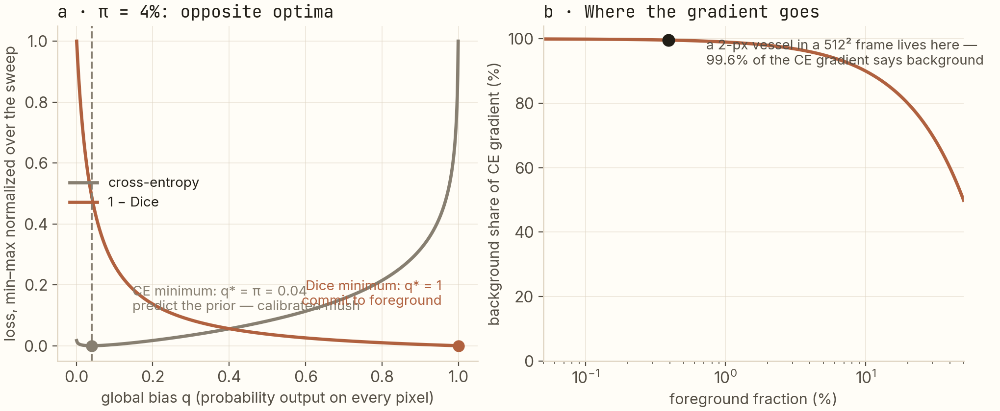
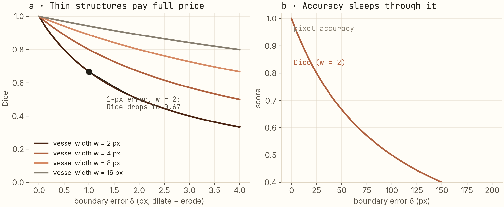

99.6% accuracy, completely useless.
Teaching a network to outline coronary arteries in X-ray video taught me how a loss function can quietly starve the very thing you're trying to detect. The full derivation — why cross-entropy fails at 1:255 imbalance, why Dice doesn't, and why thin vessels punish every single pixel of boundary error.
In medical image segmentation, the thing you're looking for — a vessel, a lesion, a tool — is often a fraction of a percent of the pixels. That asymmetry poisons the standard training recipe: cross-entropy spends 99.6% of its gradient on background at the imbalance in this post, and I derive that, not assert it. The Dice loss self-normalizes and provably optimizes the other way — but overshoots. The working recipe is both losses together. And for thin structures, one law governs everything: Dice = w / (w + δ) — a 1-pixel boundary error on a 2-pixel vessel costs 33 points.
What this post is about
Semantic segmentation is pixel-level classification: instead of "this image contains a cat," the network outputs a mask labeling every pixel — cat / not-cat. It's how machines outline organs in scans, roads in maps, defects in factory photos.
My application is interventional cardiology: outline the coronary arteries in X-ray fluoroscopy (live video of a beating heart, shot during procedures). The downstream product, QCA — quantitative coronary analysis — measures how narrow a vessel has become and turns that into stenosis numbers a cardiologist acts on. None of it works without a clean vessel mask.
Here's the trap. A coronary artery is a thin structure — 2 pixels wide, much of the time — in a 512 × 512 frame. This post is the complete story of what that one fact does to training, organized as three questions:
- Why does the standard loss (cross-entropy) ignore the vessel? — gradient arithmetic, derived.
- Why does the Dice loss fix it? — the Dice coefficient and its gradient, derived.
- Why is "thin" special, even with the right loss? — one closed-form law of boundary error.
Prerequisites: you should know that neural networks train by descending a gradient of a loss function. I'll re-derive the little probability and calculus we need as we go.
The project behind it
ArterySeg is my open-source coronary segmentation project: a U-Net (the standard segmentation architecture: an encoder that shrinks the image while learning features, a decoder that grows a mask back up, with skip connections between them) built on a ResNet34 backbone, with a custom Sobel edge-enhancement input stage and spatial attention. Its production descendant — U-Net++ over a ResNet encoder — runs in the QCA pipeline at work and reaches 0.94 Dice (Dice defined below; it's the 0-to-1 overlap score where 0.94 is very good). The loss design in this post is the part I got wrong first and understand best now.
The vocabulary you'll need
- Ground-truth mask: the reference segmentation — a binary image where vessel pixels are 1, everything else 0. Produced by expert annotation (or, in training data, by careful post-processing).
- Prediction: the network outputs, for every pixel, a probability p ∈ [0, 1] that it belongs to the vessel.
- Cross-entropy (CE): the default loss for probabilistic classification. For one pixel with label y ∈ {0, 1} and predicted probability p: L = −[y·log p + (1−y)·log(1−p)]. Penalizes confident-wrong predictions heavily; rewards correct confidence gently. Sum it over all pixels for a training example.
- Pixel accuracy: fraction of pixels whose argmax class is right. Sounds reasonable; see title.
- Dice coefficient: an overlap score between two sets, 2|A ∩ B| / (|A| + |B|) — "twice the shared area over the total area." 1 = perfect overlap, 0 = none. It's the F1 score wearing a geometry costume.
Set the stage with arithmetic
Before any calculus: how big is the thing we're segmenting? Take a 512 × 512 fluoroscopy frame — 262,144 pixels. A coronary artery crossing that frame at 2 pixels wide contributes 2 × 512 = 1,024 pixels. So the foreground fraction is π = 0.39%, an imbalance of roughly 255 : 1.
Now the title makes itself: a "model" that outputs solid black — no vessels, ever, on any input — scores 99.61% pixel accuracy. A completely useless predictor with a report-card number most classifiers would envy. Delete pixel accuracy from your vocabulary for this domain; we'll use Dice.
Question 1: where cross-entropy's gradient goes
Networks learn by following the gradient of the loss — the aggregate pull over all pixels. So the honest question isn't "is CE a good loss," it's "when you sum its gradient over an imbalanced image, which class wins the tug-of-war?"
One derivative (chain rule through the sigmoid, the standard exercise): with z the pixel's pre-sigmoid logit and p = σ(z),
∂L/∂z = p − y
The gradient magnitude for a pixel of class y is |p − y| — identical functional form for foreground and background pixels. The loss doesn't hate the vessel. But now count votes: for every foreground pixel there are ~255 background pixels each pulling with the same shape. The aggregate split is pure arithmetic:
background share of the total gradient = 1 − π = 99.61%
Under any given prediction, 99.6% of the update signal is spent getting better at background. The vessel learns last, from the smallest slice — and thin structures are exactly the ones that can't survive a slow start.
There's a sharper way to see the failure, and it's the left panel of the figure below. Consider the laziest possible model: it outputs the same probability q on every pixel — a global bias, the direction an under-trained, class-starved network collapses along. What q minimizes the loss? For CE, write the average loss over the image (this is just the two-class expectation): L(q) = −[π log q + (1−π) log(1−q)]. Differentiate, set to zero, and the optimum is:
q* = π = 0.0039 — predict the class prior, pixel after pixel
The loss's ideal lazy student reproduces the statistics of its imbalanced data and calls it a day: every pixel gets "0.4% vessel" — calibrated mush. No confident vessel anywhere.

Question 2: what Dice changes, and what it doesn't
The Dice coefficient from our vocabulary list measures overlap — and it's immune to the imbalance trick by construction: a prediction can't inflate its Dice by being big, because the denominator counts the prediction's own size. To train on it, make it differentiable: swap the hard sets for the soft predictions (pi against labels gi, summed over all N pixels):
D = 2 Σᵢ pᵢgᵢ / (Σᵢ pᵢ + Σᵢ gᵢ), loss = 1 − D
What does its gradient look like? Differentiate (quotient rule — writing P = Σp, G = Σg, I = Σpg):
∂D/∂pi = 2 [ gi(P + G) − I ] / (P + G)²
Stare at the denominator: the gradient is divided by the total mask size P + G. Whether the foreground is 40% of the image or 0.4%, the gradient scale is normalized — Dice pays each class the same budget, which is precisely what CE refused to do. And in the left panel's lazy-model test, Dice's optimum is the opposite corner: q* = 1, everything foreground. Perfect — it means Dice cannot be satisfied by mush. But it can be oversatisfied in the other direction early in training, when predictions are near-empty and the gradient (with I ≈ 0) is sparse and jittery: the classic cold-start problem of pure-Dice training.
Which is why the working recipe — in ArterySeg and in the production QCA stack — is L = Dice + BCE, roughly 1:1. BCE contributes dense, stable gradients from step one; Dice contributes the frequency normalization and the commitment pressure; and each one's degenerate optimum (predict-the-prior vs. predict-everything) is cancelled by the other's. It's not a hack; it's the two failure modes of the figure neutralizing each other.
Question 3: the law of thin structures
Suppose the loss is now right and the model is good. Thin vessels have one more trap left, and it's pure geometry. Say the prediction is perfect except its boundary sits δ pixels too wide on each side. For a straight vessel of width w, the intersection keeps w·H of the pixels, the prediction covers (w + 2δ)·H, and Dice becomes a one-liner:
Dice = 2w / (2w + 2δ) = w / (w + δ)
Plug in reality: w = 2, δ = 1 → Dice = 2/3. A third of the score, gone to a single pixel of boundary error — an error smaller than the annotation noise of the ground-truth masks themselves. A blob the size of a lung shrugs off the same 1-pixel error; a coronary artery never gets to.

This law is the argument for spending architecture on boundaries. It's why ArterySeg feeds the network a Sobel-edge-enhanced input (Sobel = a classic 3×3 filter that responds to intensity edges — making boundary evidence explicit instead of hoping the encoder discovers it) and gates skip connections with spatial attention (amplifying exactly the feature maps where vessels contrast against background). The loss can only reward sharp boundaries if the network can see them.
The checklist I actually use
- Report Dice (and IoU), never pixel accuracy. If asked for accuracy, show the solid-black model's 99.61% and change the subject.
- Start from Dice + BCE, 1:1. Their two degenerate optima cancel; BCE provides the dense early gradients Dice lacks.
- Sanity-check with w/(w+δ). Know your structure's width in pixels and what 1 pixel of error costs, before blaming the model for a "low" Dice.
- Spend architecture on boundaries — edge priors, attention at skip connections. For thin structures, the boundary is the object.
Reproduce
git clone https://github.com/anubhavagr/ArterySeg
cd ArterySeg
conda env create -f pytorch-env.yml && conda activate pytorch-env
python main.py # train the U-Net / ResNet34 variant (Dice + BCE in hybrid_loss.py)
python export_and_benchmark.py # export to TensorRT, benchmark vs the PyTorch baselineEvery curve in the figures is closed-form — CE(q), D(q), and w/(w+δ) as written above. The w/(w+δ) one is worth recomputing by hand once; it has changed how I read every Dice number since.
Next: the Gram matrix doesn't care where anything is → Repo on GitHub Where it ships: the AIMAG case study